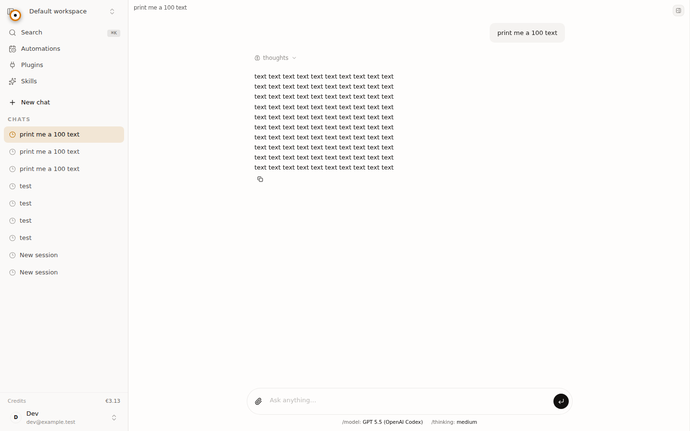
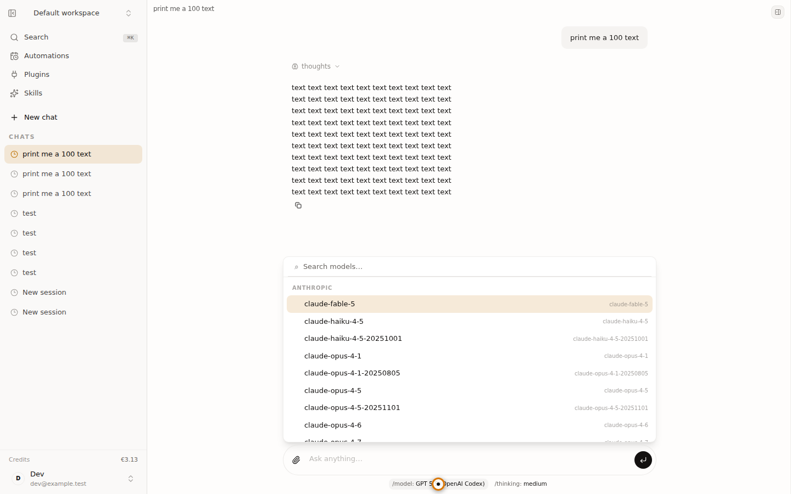

Operator model: mac/qwen3.6-35b-a3b
| State | Status | Evidence |
|---|---|---|
| Authentication | PASS | {"assertionVisible":true,"absentTextSatisfied":true,"url":"http://127.0.0.1:5173/workspace/3c5c457e-d1af-4d0b-ba8e-c4559cdca86b"} |
| Authenticated workspace | PASS | Expected DOM state visible |
| Model picker | PASS | Expected DOM state visible |

405fada37165c316…
84f3402418954191…